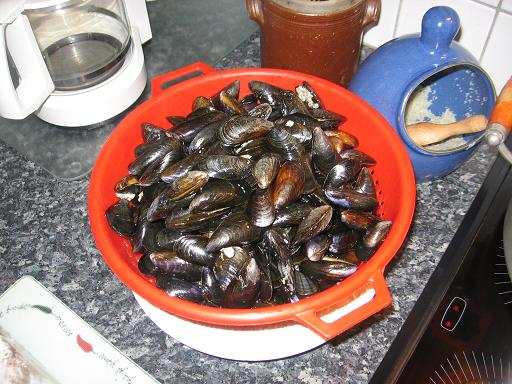
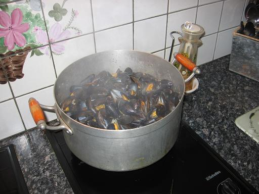
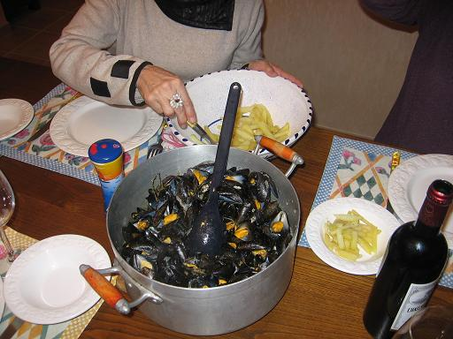

Recette n°106 :
moules marinières
à la
façon de Grand-Père de Quiberon

Ingrédients :
- 1 kg de moules nettoyées
- 1 verre de muscadet sur lie de Sèvres et Maine
- 4 échalotes hachées
- 1 gros oignon haché
- une gousse d'ail d'Arleux hachée
- un petit bouquet de persil haché
- 50 g de beurre au sel de Guérande
- 2 pincées de poivre
- 2 pincées de 4 épices
Préparation :

- sur feux doux, faire fondre dans la moitié du beurre
fondu échalotes, oignon et ail sans que cela ne brûle
- remuer 3 minutes afin que le mélange prenne une belle couleur
blonde
- verser le muscadet et le poivre, remuer, laisser réduire
pendant 5 minutes à feu vif
- mettre les moules, remuer de temps en temps jusqu'à celles
soient ouvertes
- retirer les moules à l'écumoire et réserver en
couvrant afin qu'elles restent chaudes
- ajouter le persil et les 4 épices au jus de cuisson, ajouter
le reste de beurre, laisser réduire encore 5 minutes
- remettre les moules, remuer et servir dans le plat de cuisson
aussitôt
Observations :

1 - Recette préparée bien des fois par Mamy de
Rennes. Toujours parfaites (Mamy et la recette) ! La dernière
fois à Quiberon avec Michel et Andrée à Quiberon
le 18 novembre 2006 ; Michel avait fait des frites avec maestria (cf.
recette n°107) pour accompagner : sublime avec une salade d'endives
au vinaigre balsamique et un Margaux 1997 rapporté par William
et Isabelle de leurs vacances d'été à Lacanau.
2 - on peut remplacer le beurre par de la crème fraîche